We Build Careers
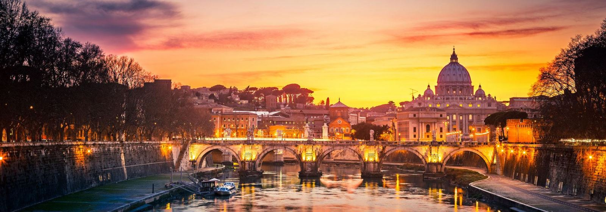
ایتالیا در یک نگاه :
شاید پر بی ربط نگفته باشد آن ضرب المثل ایتالیایی که می گوید: "همۀ راه ها به رم ختم می شود!" رم، شهری که به همراه شهرهای دیگر ایتالیا
تقریبا نیمی از آثار باستانی کل دنیا را در خود جا داده است. ایتالیا نه فقط کشور بناهای تاریخی و آثار هنری غنی، که سرزمین شگفتی های بی پایان است: ورزش، جاذبه های توریستی طبیعی و فرهنگی، مد، غذا و سبک زندگی شاد ایتالیایی ها در سراسر دنیا زبانزد است.
علاوه بر رم، زندگی در هر کدام از شهرهای دیگر ایتالیا تجربه ای تکرار نشدنی برای شما به همراه خواهد آورد:
ونیز، شهر خانه های روی آب و پل های رمانتیک؛ میلان، پایتخت طراحی و مد اروپا؛ فلورانس؛ زادگاه فرهنگ غنی ایتالیایی؛ تورین، قطب صنعتی ایتالیا و میزبان فستیوال های موسیقی و فیلم، پیزا با برج معروفش و مناظر بدیع ایالت توسکانی؛ ناپل، سیسیل و ساردنیا با سواحل مدیترانه ای بی نظیر که هر سال میلیون ها توریست را به خود می کشاند؛ علاوه برهمۀ اینها جنگل های کوهستانی و دریاچه های بکر مناطق شمال و شمال شرق ایتالیا، تنها بخشی دیگری از دیدنی های این کشور منحصر به فرد است.
ایتالیا پنجمین کشور پر جمعیت اروپا و 23مین کشور پر جمعیت دنیا است و جزو 8 کشور صنعتی جهان محسوب می شود. آب و هوای ایتالیا بسیار مطبوع است ؛ به طوریکه بیشتر هوای معتدل فصلی دارد و آب هوای مناطق ساحلی آن با شرایط هوایی کوهستان های داخلی تفاوت زیادی دارد.
چرا تحصیل در ایتالیا؟
تحصیل در ایتالیا دارای مزیت های بسیاری است. برخی از مهم ترین مزیت های تحصیل در ایتالیا عبارتند از:
· هزینه بسیار مناسب تحصیل در ایتالیا با کیفیت آموزشی بالا
یکی از قوانین بسیار کارآمد در نظام آموزشی در ایتالیا این است که، تحصیل، باید برای همه اقشار جامعه امکان پذیر باشد. در همین راستا، تمامی دانشگاه های دولتی در ایتالیا، شهریه تحصیلی را بر اساس میزان درآمد سالیانۀ خانوادۀ دانشجو دریافت میکنند.
تحصیل در ایتالیا در دانشگاه های دولتی این کشور به لحاظ هزینه ها متغییر، و به طور میانگین از 320 الی 3200 یورو در سال بوده و برای دانشجویان بین المللی نیز هزینه های تحصیل یکسان می باشد. میانگین شهریه 2000 یورو در سال است که موسسه کندو دانش آوران سام میتواند آن را در برخی از موارد به 500 یورو در سال کاهش دهد.
· بورسیه 5000 یورویی برای متقاضیان ایرانی، فارغ از معدل تحصیلی
یک ویژگی خاص تحصیل در ایتالیا، وجود کمک هزینه 5000 یورویی در سال برای متقاضیان ایرانی است که فارغ از معدل و شرایط فارغ التحصیلی شان می توانند از استان محل تحصیلشان در ایتالیا دریافت نمایند. این بورسیه ها از انواع بورسیه های دانشجویان ممتاز مجزا است و احتمال دریافت آن برای متقاضیان ایرانی بسیار بالاست. موسسه کندو دانش آوران سام به لطف سالها تجربه کمک به دانشجویان آماده ارائه خدمات تخصصی در این زمینه است.
· رتبۀ علمی بالای دانشگاه ها در سراسر دنیا
دانشگاه ها در ایتالیا دارای شاخص علمی بالایی در سطح جهان هستند. بر اساس یک آمار در سال 2014، بالغ بر 34 دانشگاه این کشور در رتبه زیر 900 دانشگاه برتر سطح جهان قرار گرفته اند. به علاوه، بر اساس رتبه بندی معتبر QS، رتبه به دست آمده از چهارده دانشگاه برتر ایتالیا در سال جاری به قرار زیر است :
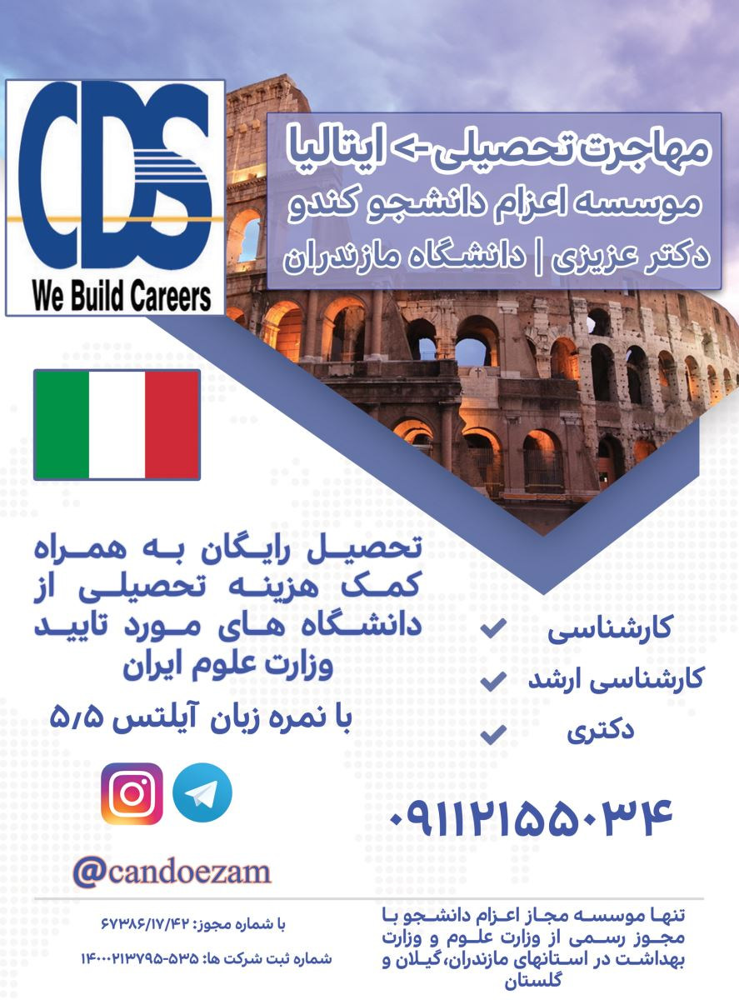
جدول رتبه بندی چهارده دانشگاه برتر ایتالیا بر اساس رتبه بندی معتبر کیو اس
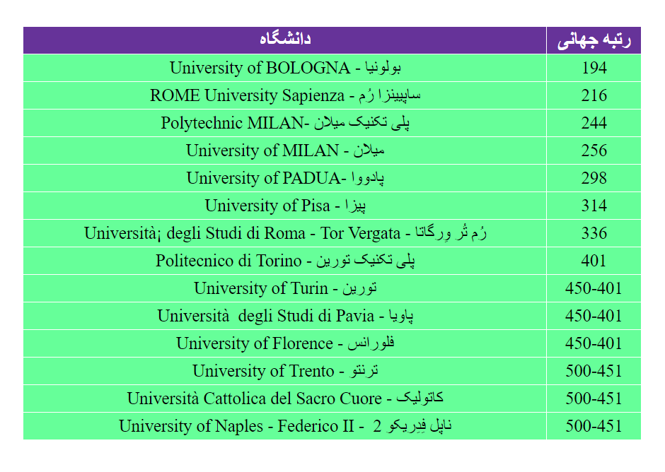
· بیش از 170 رشته در مقطع لیسانس، فوق لیسانس و اکثریت دوره های دکتری به زبان انگلیسی
با توجه به رویکرد بین المللی که در سالهای اخیر در بخش آموزش عالی کشور ایتالیا اتخاذ شده است، این امکان فراهم شده که تعداد بسیار زیادی از رشته های ارائه شده در کشور ایتالیا در مقاطع لیسانس، فوق لیسانس و دکتری به زبان انگلیسی ارائه شود.
مقاطع و رشته های ارائه شده به زبان انگلیسی در ایتالیا
در این بخش، اسامی رشته هایی درج شده که از مقاطع کارشناسی تا دکتری به زبان انگلیسی ارائه شده اند. بدیهی است که تعداد رشته های ارائه شده به زبان ایتالیایی که زبان رسمی این کشور است به مراتب بیشتر از لیست زیر می باشد.
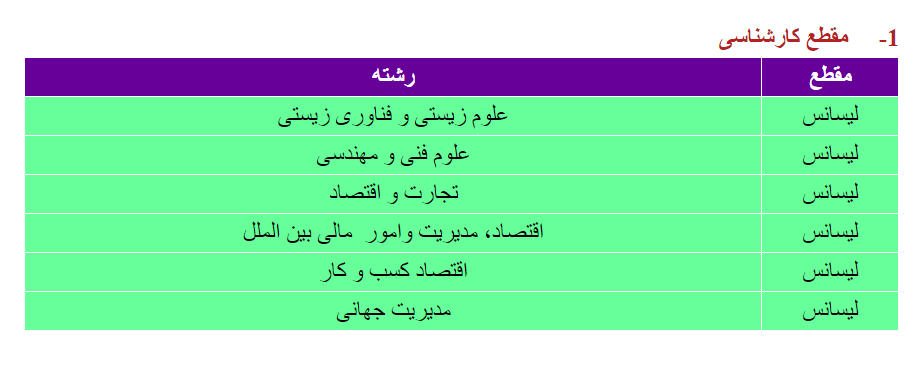
خبر خوش :یکی از مهم ترین اتفاقاتی که در سایه تحولات سیاسی اخیر و در نتیجه بهبود روابط ایران و ایتالیا رخ داده است، امکان تحصیل به زبان انگلیسی در ایتالیا از مقطع لیسانس می باشد. پیش از این، سفارت ایتالیا در تهران از صدور روادید برای دوره های دانشگاهی در مقطع کارشناسی خود داری می کرد که به زبان انگلیسی ارائه می شدند. اما اخیرا با موافقت مقامات سفارت ایتالیا، امکان تحصیل در این مقطع نیز همراه با تسهیلات ویژه کمک هزینه برای دانشجویان ایرانی مهیا می باشد. البته لازم به ذکر است که برخی از رشته های ارائه شده در این کشور منوط به قبول شدن در آزمون سراسری هستند اما در برخی از دیگر رشته ها، نظیر مدیریت و اقتصاد، حکم رانی بین المللی و رشته علوم مهندسی امکان تحصیل بدون آزمون امکان پذیر است.
2- مقطع کارشناسی ارشد
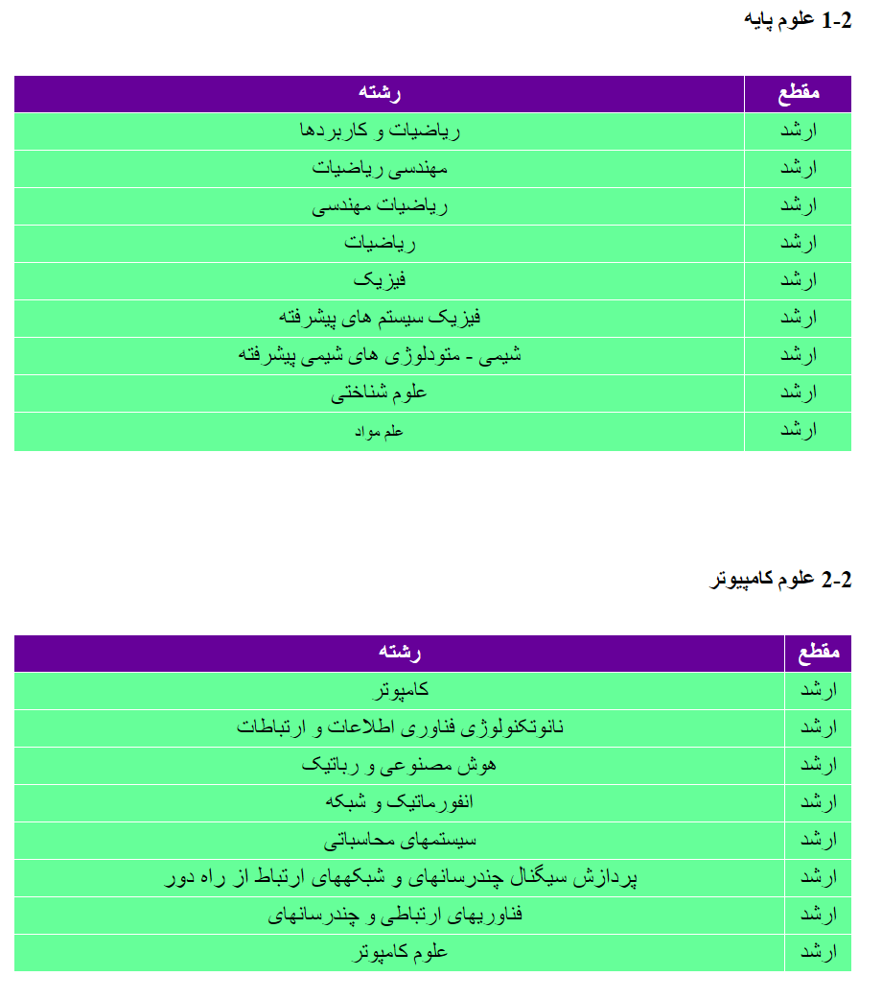
3-2 علوم فنی و مهندسی
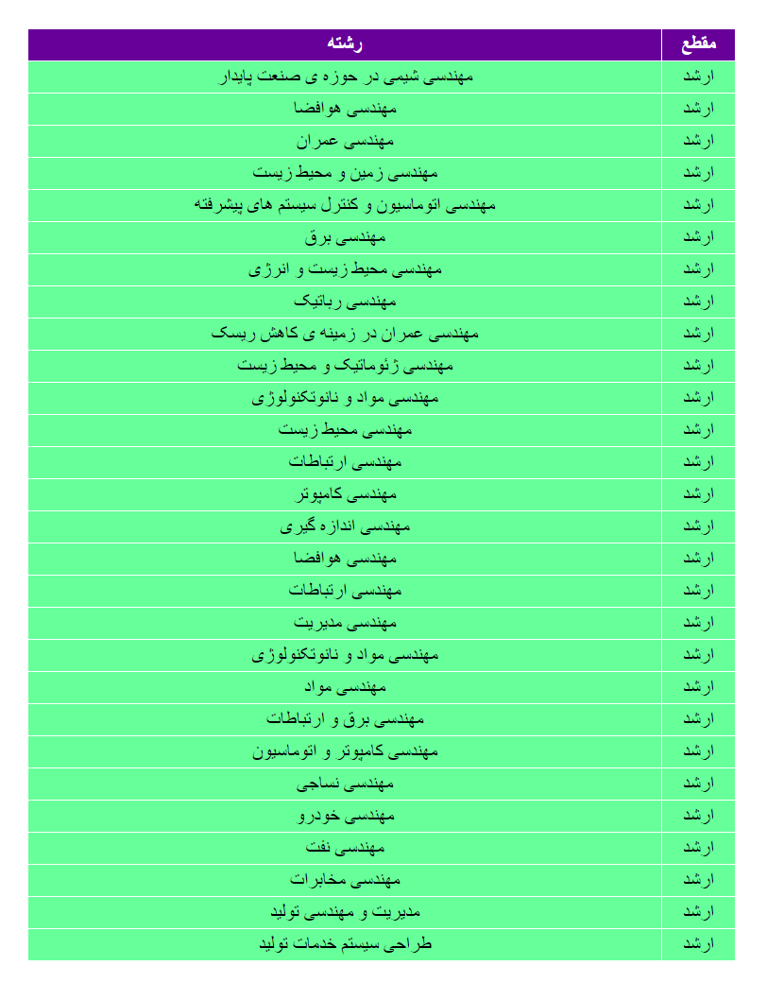
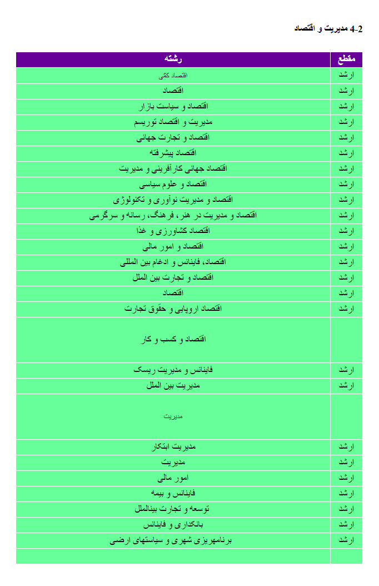
5-2 علوم پزشکی
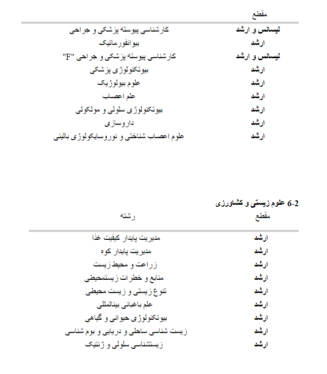
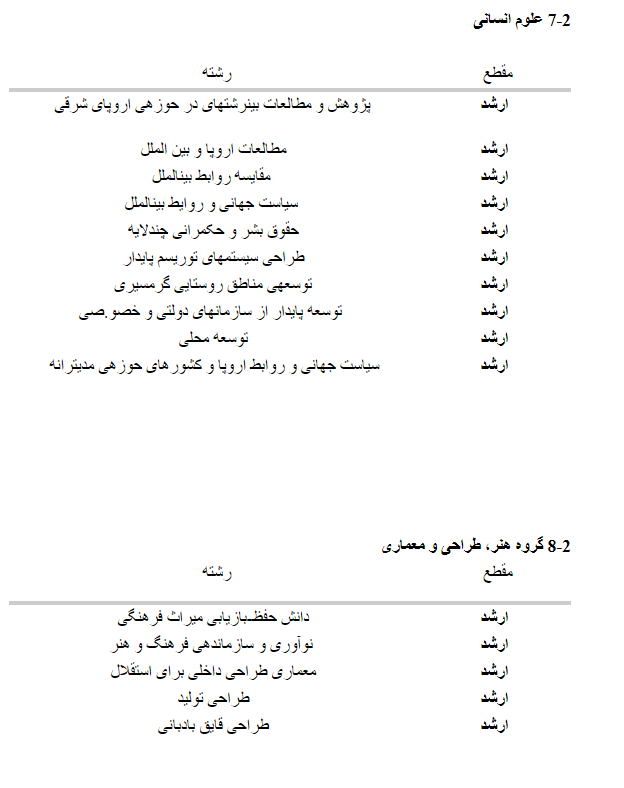
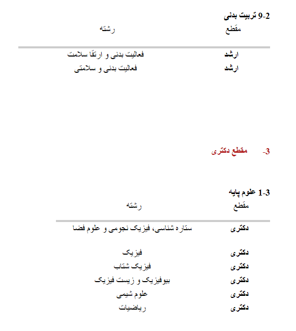
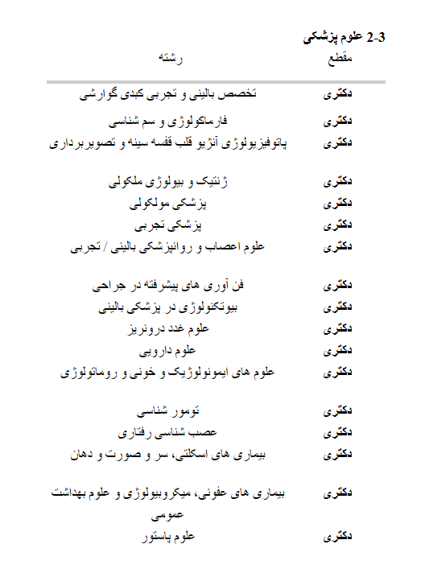
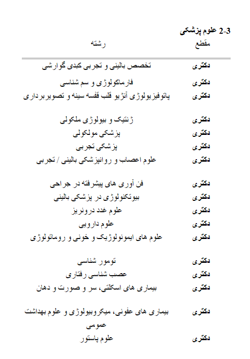
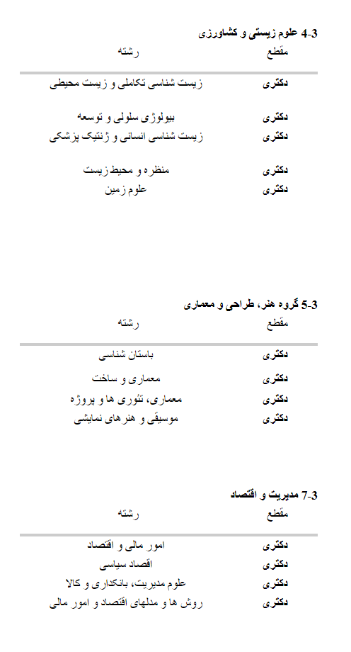
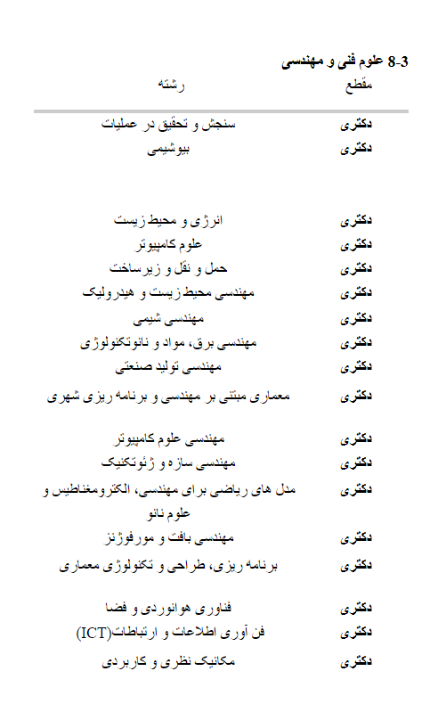
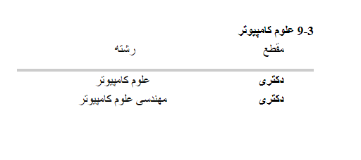
دوره های مشترک تحصیلی در ایتالیا با دانشگاه های ممتاز اروپا ، کانادا و آمریکا،
به دلیل اعتبار و قدمت بالای دانشگاه های ایتالیا، همواره تحصیل در دانشگاه های بسیاری در ایتالیا به صورت مشترک با دانشگاه های برتر دنیا برگزار شده و می شود. تحصیل در این دوره ها به طور همزمان علاوه بر تجربه زندگی و تحصیل در دو کشور، موجب می شود که دانشجو از دو دانشگاه یا حتی بیشتر، مدارک پایان دوره دریافت نماید که به منزله تحصیل در آن مراکز بوده است. از نمونه های بسیار آن می توان به دوره مشترک کارشناسی ارشد رشته مهندسی عمران میان دانشگاه بولونیا ایتالیا و دانشگاه کولومبیا در ایالات متحده با رتبه جهانی 9 اشاره کرد.
· شهرت جهانی در رشته هایی چون معماری، هنر، مهندسی، باستان شناسی، تاریخ و علوم اجتماعی
ایتالیا به لطف داشتن اساطیر کهنی چون میکلانژ، رافائل، فراگامو، مارکو پولو، دانته، گالیله، داوینچی و بزرگان دوره معاصر این کشور چون انزو فراری، جورجو آرمانی، گوچی و آندره آ بوچلی همواره به عنوان کشوری با مردمان خلاق و مبتکر در جهان مشهور بوده است. این موضوع به ویژه در عرصه هنر و شاخه های آن نمود قابل توجهی در ایتالیا دارد.
· کیفیت و شاخص های بالای زندگی
کشور ایتالیا به واسطه عضویت در اتحادیه اروپا دارای استاندارد های بالایی در زمینه های مختلف از جمله بهداشت، خدمات اجتماعی، پوششهای بیمه ای و سایر موارد می باشد.
· تفاهمات فرهنگی و تاریخی بسیار با ملت ایران
هر دو کشور ایران و ایتالیا به دلیل داشتن تاریخ و تمدن دیرینه دارای مشترکات تاریخی و فرهنگی زیادی می باشند که آن را می توان به وضوح در زندگی روزمره و فرهنگ مردم هر دو کشور مشاهده نمود.
دانشگاه های ایتالیا
در این قسمت، فهرستی از تمامی دانشگاه های کشور ایتالیا ارائه شده است که مورد تایید وزارت علوم، تحقیقات و فناوری ایران می باشند:
الف) دانشگاهها و مراكز آموزش عالي ايتاليا،
گروه يك (ممتاز)
| گروه | نام فارسی دانشگاه | نام انگلیسی دانشگاه | نحوه ارزشیابی وزارت علوم |
| یک (ممتاز) | ۩ دانشگاه بولونیا | University of Bologna | √ ارزشیابی کامل |
| یک (ممتاز) | ۩دانشگاه رم ساپیینزا | Universita degli studi di Roma Sapienza | √ ارزشیابی کامل |
| یک (ممتاز) | ۩دانشگاه پلی تکنیک میلان | Politecnico di Milano | √ ارزشیابی کامل |
| یک (ممتاز) | ۩دانشگاه میلان | Universita degli studi di Milano | √ ارزشیابی کامل |
| یک (ممتاز) | ۩دانشگاه پیزا | Universita degli studi di Pisa | √ ارزشیابی کامل |
| یک (ممتاز) | ۩دانشگاه پادووا | Universita degli studi di Padova | √ ارزشیابی کامل |
| یک (ممتاز) | ۩دانشگاه تور ورگاتای رم |
Universitả Degli Studi di Roma Tor Vergata |
√ ارزشیابی کامل |
| یک (ممتاز) | ۩دانشگاه پلی تکنیک تورین | Politecnico di Torino | √ ارزشیابی کامل |
| یک (ممتاز) | ۩دانشگاه فلورانس | Universita degli studi di Firenze | √ ارزشیابی کامل |
| یک (ممتاز) | ۩دانشگاه ناپل فدریکو دوم |
Universita degli studi di Napoli “Federico II” |
√ ارزشیابی کامل |
| یک (ممتاز) | ۩دانشگاه تورین | Universita degli studi di Torino | √ ارزشیابی کامل |
| یک (ممتاز) | ۩دانشگاه پاویا | Universita degli studi di Pavia | √ ارزشیابی کامل |
| یک (ممتاز) | ۩دانشگاه باری | Universita degli studi di Bari | √ ارزشیابی کامل |
| یک (ممتاز) |
۩دانشگاه کاتولیکا |
Universita Cattolica del Sacro Cuore |
√ ارزشیابی کامل |
| یک (ممتاز) | ۩دانشگاه جنووا | Universita degli studi di Genova | √ ارزشیابی کامل |
| یک (ممتاز) | ۩دانشگاه میلان بیکوکا | Universitả degli Stadi di Milano- Bicocca | √ ارزشیابی کامل |
| یک (ممتاز) | ۩دانشگاه سیه نا | Universita degli studi di Siena | √ ارزشیابی کامل |
| یک (ممتاز) | ۩دانشگاه تریسته | Universita degli studi di Trieste | √ ارزشیابی کامل |
| یک (ممتاز) | ۩دانشگاه پروجا | Universita degli studi di Perugia | √ ارزشیابی کامل |
| یک (ممتاز) | ۩دانشگاه مودنا – رجو امیلیا | Universitả degli Studi di Modena e Reggio Emilia | √ ارزشیابی کامل |
| یک (ممتاز) | ۩دانشگاه فوسکاری ونیز | Universitả Cả Foscari di Venezia | √ ارزشیابی کامل |
| یک (ممتاز) | ۩دانشگاه کاتانیا | Universita degli studi di Catania | √ ارزشیابی کامل |
| یک (ممتاز) | ۩دانشگاه کاتانیا | Universita degli studi di Catania | √ ارزشیابی کامل |
| یک (ممتاز) | ۩دانشگاه سوم رم | Universitả degli Studi di Roma Tre | √ ارزشیابی کامل |
| یک (ممتاز) | ۩دانشگاه برشا | Universitả degli Studi di Brescia | √ ارزشیابی کامل |
| یک (ممتاز) | ۩دانشگاه ورونا | Universitả Degli Studi di Verona | √ ارزشیابی کامل |
| گروه | نام فارسی دانشگاه | نام انگلیسی دانشگاه | نحوه ارزشیابی وزارت علوم |
| دو (خوب) | ۩دانشگاه اودینه | Universitả degli studi di Udine | √ ارزشیابی کامل |
| دو (خوب) | ۩دانشگاه ترنتو | Universitả degli studi di Trento | √ ارزشیابی کامل |
| دو (خوب) | ۩دانشگاه کالیاری | Universita degli studi di Cagliari | √ ارزشیابی کامل |
| دو (خوب) | ۩دانشگاه فررارا | Universita degli studi di Ferrara | √ ارزشیابی کامل |
| دو (خوب) | ۩دانشگاه پارما | Universita degli studi di Parma | √ ارزشیابی کامل |
| دو (خوب) | ۩دانشگاه کالابریا | Universitả Della Calabria | √ ارزشیابی کامل |
| دو (خوب) | ۩دانشگاه ونیز (IUAV) | Universitả IUAV di Venezia | √ ارزشیابی کامل |
| دو (خوب) | ۩دانشگاه برگامو | Universitả degli Studi di Bergamo | √ ارزشیابی کامل |
| دو (خوب) | ۩ کنسرواتوار میلان | Conservatorio di Milano | صرفا تا کارشناسی ارشد |
| دو (خوب) | ۩ کنسرواتوار ناپل | Conservatorio di Napoli | صرفا تا کارشناسی ارشد |
| دو (خوب) | ۩ کنسرواتوارکالیاری | Conservatorio di Cagliari | صرفا تا کارشناسی ارشد |
| دو (خوب) | ۩ کنسرواتوار باری | Conservatorio di Bari | صرفا تا کارشناسی ارشد |
| دو (خوب) | ۩ کنسرواتوار رم | Conservatorio Di Musica "S.Cecilia" Roma | صرفا تا کارشناسی ارشد |
| دو (خوب) | ۩ کنسرواتوار جوزپه وردی تورین | Conservatorio di Torino Guiseppe Verdi | صرفا تا کارشناسی ارشد |
| دو (خوب) | ۩ دانشگاه ترامو | Universitả degli Studi di Teramo | √ ارزشیابی کامل |
| دو (خوب) | ۩دانشگاه سالنتو |
Universitả del Salento (Universitả degli studidi Lecce) |
√ ارزشیابی کامل |
| گروه | نام فارسی دانشگاه | نام انگلیسی دانشگاه | نحوه ارزشیابی وزارت علوم |
| سه (متوسط) | ۩دانشکده علوم پزشکی رم | Universitả 'Campus Bio- Medico' di Roma | صرفا تا مقطع کارشناسی ارشد |
| سه (متوسط) | ۩دانشگاه کارلو کاتانئو | Universitả Carlo Cattaneo | √ ارزشیابی کامل |
| سه (متوسط) | ۩دانشگاه اتباع خارجی پروجا | Universitả per Stranieri di Perugia (University for Foreigners, Perugia) | √ ارزشیابی کامل |
| سه (متوسط) | ۩ دانشگاه پیه مونته اورینتاله آمادئو آوگادرو | Universitả degli Stadi del Piemonte Orientale ‘Amedeo Avogadro’ | √ ارزشیابی کامل |
| سه (متوسط) | ۩دانشگاه کاسینو | Universitả degli di Cassino | √ ارزشیابی کامل |
| سه (متوسط) | ۩دانشگاه مانیا گراسیا در کاتانتزارو | Universitả degli Studi ‘Magna Graeciả di Catanzaro | √ ارزشیابی کامل |
| سه (متوسط) | ۩دانشگاه آکویلا | Universitả degli Studi dell’Aquila (University of Aquila) | √ ارزشیابی کامل |
| سه (متوسط) | ۩دانشگاه اینسوبریا | Universita degli studi dell’ Insubria | صرفاً تا مقطع کارشناسی |
| سه (متوسط) | ۩دانشگاه فوجّا | Universitả degli studi di Foggia | √ ارزشیابی کامل |
| سه (متوسط) | ۩دانشگاه فورو ایتالیکو رُم | Universitả degli studi di Roma "Foro Italico (previously: Istituto Universitario di Scienze Motorie) | √ ارزشیابی کامل |
| سه (متوسط) | ۩دانشگاه مولیزه | Universitả degli studi del Molise | √ ارزشیابی کامل |
| سه (متوسط) | ۩دانشگاه سانیو بِنِه وِنتو | Universitả degli studi del Sannio-Benevento | √ ارزشیابی کامل |
| سه (متوسط) | ۩دانشگاه مدیترانه ای رجو کالابریا | Universitả degli studi Mediterranea di Reggio Calabria | √ ارزشیابی کامل |
| سه (متوسط) | ۩دانشگاه خواهر اورسولا بنینکازا | Universitả degli studi Suor Orsola Benincasa (previously: Istituto Universitario Suor Orsola Benincasa) | √ ارزشیابی کامل |
| سه (متوسط) | ۩دانشگاه ول دآئوستا | Universitả della Val d’Aosta | √ ارزشیابی کامل |
| سه (متوسط) | ۩دانشگاه پلی تکنیک مارکه | Universitả politecnica delle Marche | √ ارزشیابی کامل |
| نام دانشگاه |
رتبه در QS |
رتبه درTimes | رتبه درShanghai |
|---|---|---|---|
|
دانشگاه بلونیا University of Bologna |
204 | 276 -300 | 201-300 |
|
دانشگاه ساپیینزای رم Sapienza University of Rome |
213 | 301-350 | 101-150 |
|
دانشگاه پلی تکنیک میلان Politecnico di Milano |
187 | 276-300 | - |
|
دانشگاه میلان University of Milano |
306 | 276-300 | 151-200 |
|
دانشگاه پیزا University of Pisa |
367 | 301-350 | 101-150 |
|
دانشگاه پادووا University of Padua |
309 | 301-350 | 151-200 |
|
دانشگاه تور ورگاتای رم Università di Roma - Tor Vergata |
401 | - | 401-500 |
|
دانشگاه ناپل University of Naples-Federico II |
441 | - | 301-400 |
|
دانشگاه فلورانس University of Florence |
411 | 351-400 | 201-300 |
|
دانشگاه پلی تکنیک تورین Politecnico di Torino |
314 | - | 401-500 |
|
دانشگاه پاویا Università degli Studi di Pavia |
501 | 251-275 | 401-500 |
|
دانشگاه کاتولیکا ساکرو کور Università Cattolica del Sacro Cuore |
377 | - | - |
|
دانشگاه تورین University of Turin |
501 | 226-250 | 201-300 |
|
دانشگاه ترنتو University of Trento |
411-420 | 201-225 | - |
|
دانشگاه سیه نا University of Siena |
701 | - | - |
|
دانشگاه بیکوکا University of Milano- Bicocca |
601 | 226-250 | 401-500 |
|
دانشگاه جنوا University of Genoa |
701 | - | 301-400 |
|
دانشگاه پروجا Perugia University |
701 | - | 301-400 |
|
دانشگاه مودِنا University of Modena |
701 | - | - |
|
دانشگاه تریسته University of Trieste |
651 | 226-250 | - |
|
دانشگاه برشا University of Brescia |
701 | - | - |
|
دانشگاه فوسکاری ونیز Università Ca' Foscari Venezia |
701 | - | - |
|
دانشگاه کاتانیا Catania University |
701+ | - | - |
|
دانشگاه سوم رم Università degli Studi Roma Tre |
701+ | - | - |
|
دانشگاه باری University of Bari |
701+ | 351-400 | - |
|
دانشگاه وِرونا Verona University |
701+ | - | - |
|
دانشگاه سالنتو University of Salento |
- | 301-350 | - |
|
دانشگاه فِرارا University of Ferrara |
- | 351-400 | 401-500 |
| Universita Bocconi | N/A | - | - |
نشانی:ساری- میدان امام-ساختمان برلیان-طبقه اول-بالای بانک تجارت،واحد شماره 19
لطفا قبل از آمدن به موسسه با کارشناسان موسسه تماس بگیرید
موسسه اعزام دانشجو کندو دکتر عزیزی
با مجوز وزارت علوم
شماره های تماس جهت تعیین وقت
011333675000
09030612326
(زمان حضور آقای دکتر عزیزی: عصر های یک شنبه،سه شنبه و پنج شنبه از ساعت 16 الی 20)
Address:
Kühlwetterstraße 8.
Room Number 0227
52072 Aachen
Germany
Contact:01573 8947230-02418025258
Business Hours:
Mon 7:00PM - 9:30AM
Wed 7:00-9:30PM
Sat 10:00AM-6:30PM
Sun 10:00 AM - 6:30 PM


کلیه حقوق مرتبط به این وبسایت متعلّق به موسسه اعزام دانشجو کندو دانش آوران سام میباشد
cds.org.ir, Copyright©2015, All Rights Reserved
Design by : BOOMHUNK